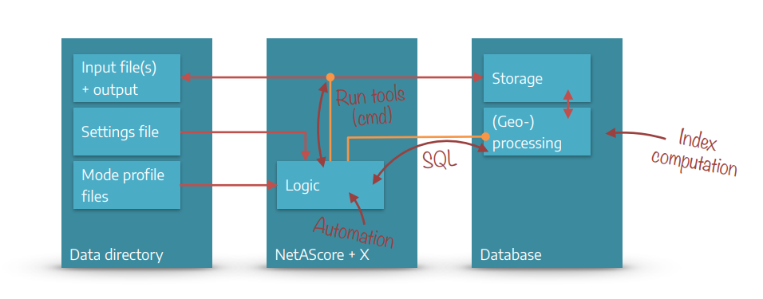

How to contribute#
We are happy about contributions, feedback and ideas that help developing NetAScore further. We also appreciate initiatives for integrating NetAScore and its output into other tools. If you encounter any issues or bugs within the toolbox, feel free to open an issue and if you want to further develop NetAScore or have any contributions, please fork the repository and make a pull request if you want to add to or modify the existing code.
If you want to work with the source code of NetAScore, you can start exploring it from the entrypoint of execution in generate_index.py. This script parses all arguments and settings and verifies their correctness and that all mandatory information is given. Then it runs all processing steps in order and calls the respective handlers for each step.
Below you find an overview over the general structure and main components of NetAScore. Detailed instructions on how to run NetAScore are available on the respective wiki page.
System Overview#
Interplay of Python and SQL#
NetAScore can be categorized into 3 main components:
The NetAScore software: Scripts written in Python and SQL that automate the workflow and run (geo-) processing steps in the database. It relies on several command-line utilities to facilitate data import and export, as well as format conversion etc.
A PostgreSQL database that stores all data and performs (spatial) computations to generate the results.
The data directory that provides input data, mode profiles, and settings files to control the workflow. Results of the workflow are also added to this directory.
To ease the use of NetAScore, we provide a Docker-compose setup that contains NetAScore, a PostgreSQL database, as well as all required tools and packages. Detailed instructions for how to run NetAScore in Docker are provided !— TODO: link to explanation [here] !— TODO: add gfx of docker vs. stand-alone Python approach
System Components and Workflow#
 NetAScore reads all settings, model parameters (mode profiles) and input files from the data directory. It then handles workflow automation with Python scripts that run external command line utilities where needed. As the main processing steps take place in a PostgreSQL database, the Python code also handles code execution in the database through SQL statements.
All steps of the workflow are controlled from the main Python file calculate_index.py. It reads the settings file and accepts additional command-line parameters (e.g. to show more detailed debug output or to skip certain processing steps). Individual classes for each processing step take care of the respective tasks such as data handling and (geo-) processing in the database. With completion of the export step, the outputs are stored to a geopackage file inside the data directory.
Data Directory#
The data directory contains all external data NetAScore needs to access (settings file, mode profile files and all input datasets) as well as the output data sets generated by NetAScore.
Users can specify their tasks for NetAScore in settings filess (e.g. settings.yml). The mode profile files are designed for editing, documenting, and sharing the definitions of model parameters for each transport mode.
Input file(s) + outputs#
The input file(s) and the output are located within the data directory. Typical input files are network datasets (OSM PBF File or GIP OGD export) and optionally a DEM (digital elevation model) or noise data (Noise Zones).
The Output datasets will be exported as PostgreSQL tables (export_edge with attributes, indicators, indices & export_node with elevation values) and as a GeoPackage file with the following layers: edge (with attributes, indicators & indices) and node (with elevation values).
Settings file#
Settings files are written in YAML .yml and placed inside the data directory - e.g. data/settings.yml. For each run of NetAScore, the settings file to use is specified as command line parameter - e.g. docker compose run netascore data/settings.yml.
The settings file contains information such as:
… DB connection parameters
database:
host: localhost
port: 5432
dbname: netascore
on_existing: abort
… references to the input file and optional datasets
import:
type: osm
filename: austria-latest.osm.pbf
optional:
dem:
filename: austria.tif # GeoTIFF
srid: 31287
noise:
filename: noise.gpkg # GeoPackage
… references to mode profiles
profiles:
-
profile_name: bike
filename: weights_bike.yml
-
profile_name: walk
filename: weights_walk.yml
… export settings
export:
type: geopackage
filename: netascore_output.gpkg
You find more information on the settings file on on the settings page
Mode profile files#
Mode profiles are used to define the core model logic: Here, weights are assigned per indicator, and individual indicator values are mapped to numerical values that represent the respective suitability. It is also possible to define custom value overrides, to capture certain indicator value combinations.
You find all information on the mode profiles page.
NetAScore Source Code File Structure#
This section gives an overview of the source code structure of NetAScore. If you only want to use the software and adjust model parameters, you do not need to dive into this. However, if you are interested in developing NetAScore further, we want to give you some hints on how the software is structured.
The Main class and recommended starting point for working with the source code is the file generate_index.py. It contains the main sequential logic of NetAScore, reads the parameters and settings provided and triggers the individual processing steps.
The sql folder contains two subdirectories: functions and templates. Here the core logic of (geo-) processing within the PostgreSQL database is contained. Generic SQL-functions as well as JinjaSQL templates are used for automating the workflow with Postgres.
The folder toolbox contains genereic helper classes. Currently those are a database helper (PostgresConnection) dbhelper.py and a class for logging and general tasks helper.py.
Within core, classes that handle the main processing steps of NetAScore are contained (more information on the workflow can be found in the wiki). The class DbStep in db_step.py defines the general interface for processing steps.
PostgresConnection class (db helper)#
The PostgresCnnection class is located at /toolbox/dbhelper.py and abstracts several commonly used functionalities regarding interaction with the Postgres database and PostGIS extension. It handles automatically (re-) establishing database connections and provides Python functions for common tasks such as setting the working schema, querying data, checking whether a table exists, handling name conflicts and parsing / executing JinjaSQL templates.